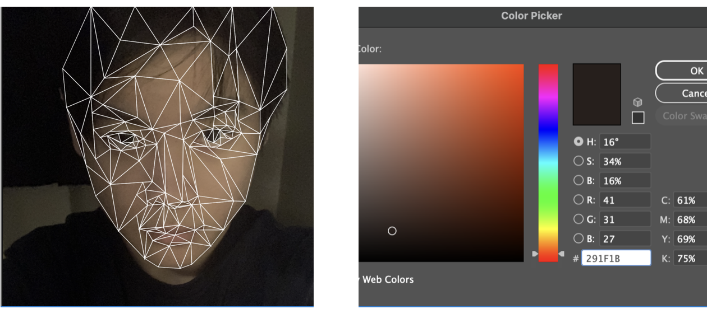
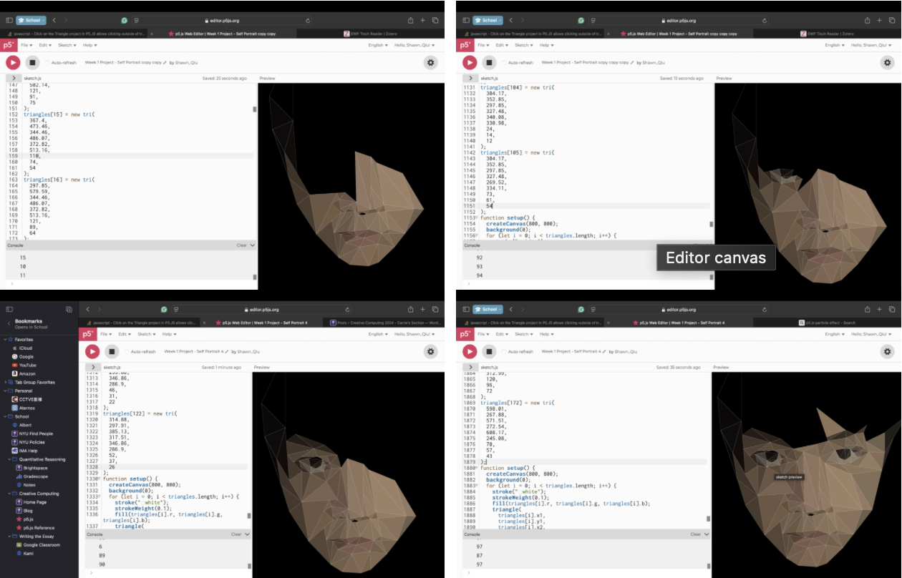
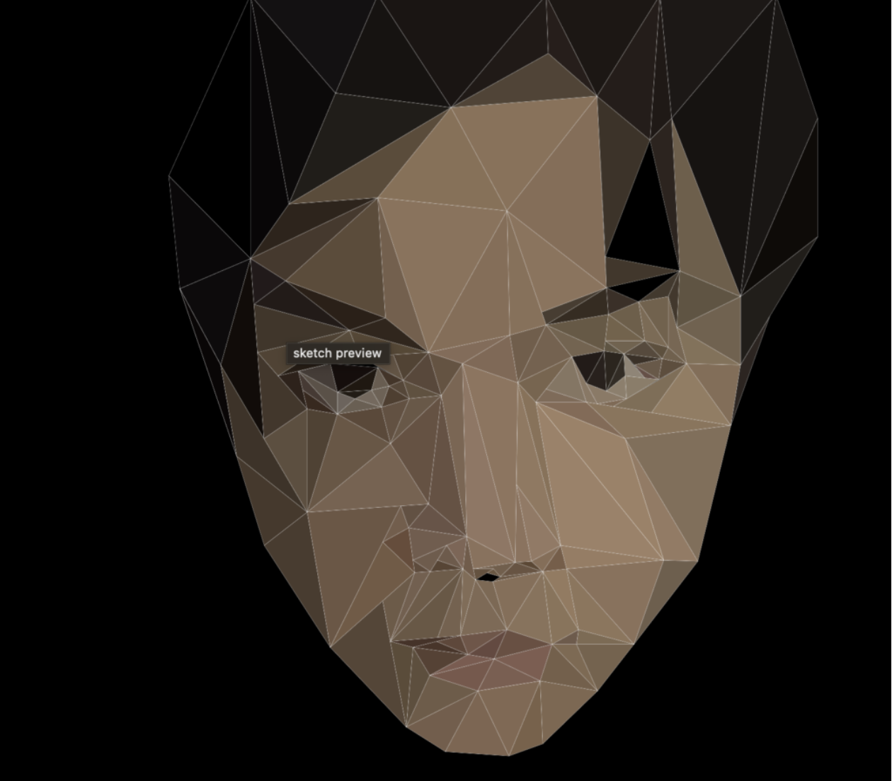
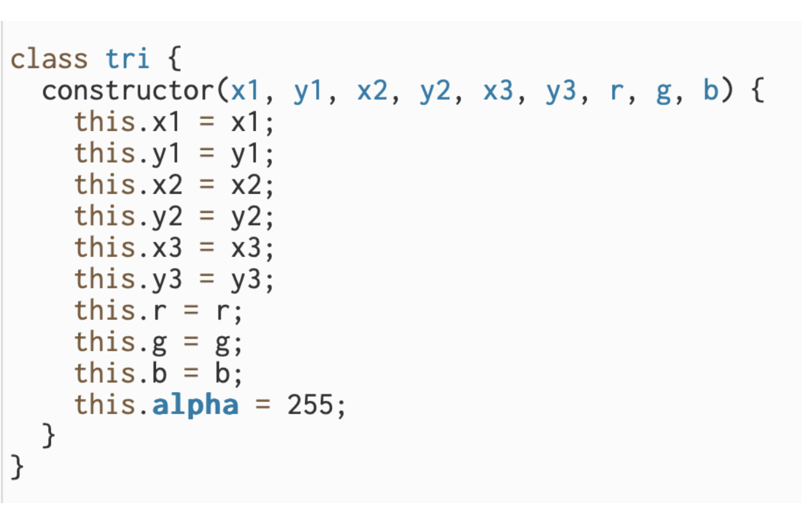
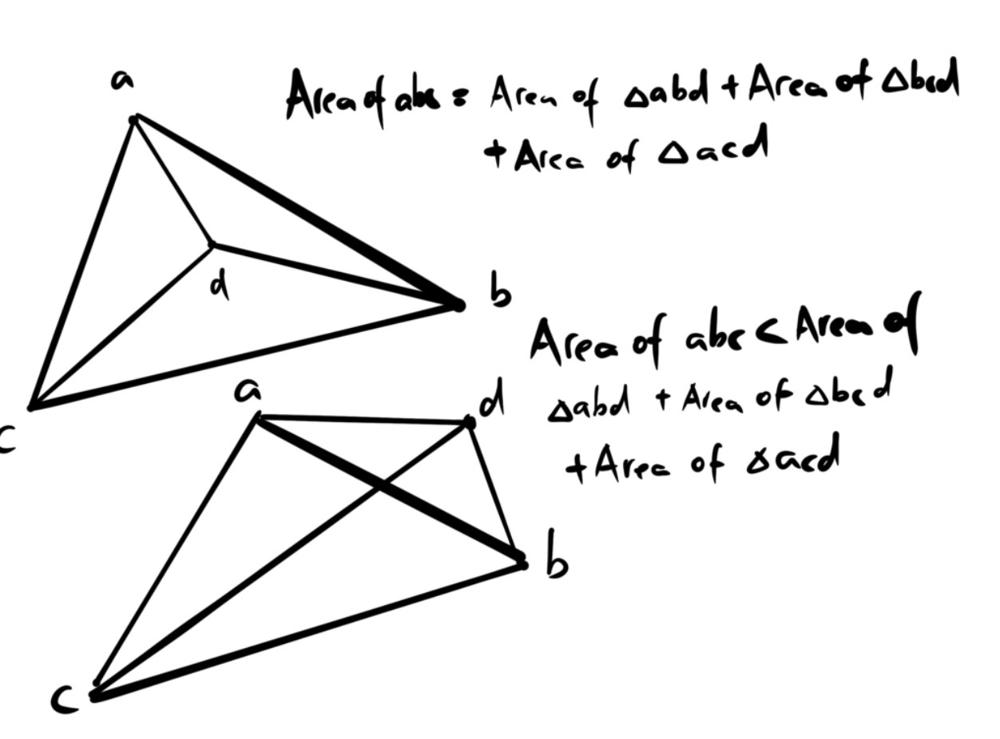
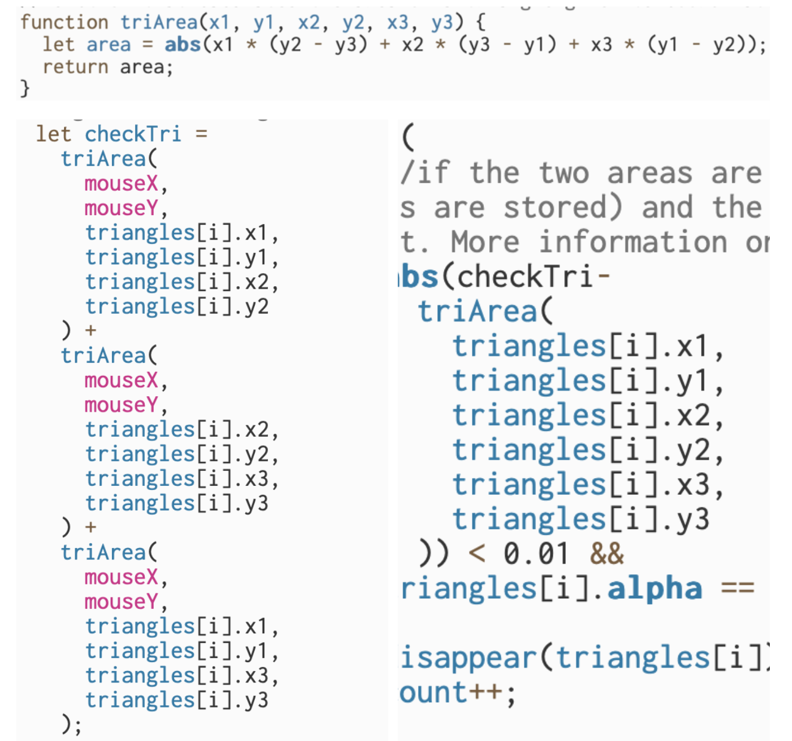
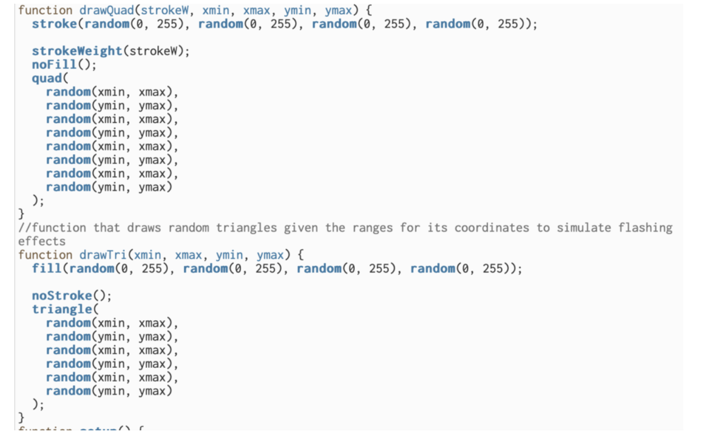
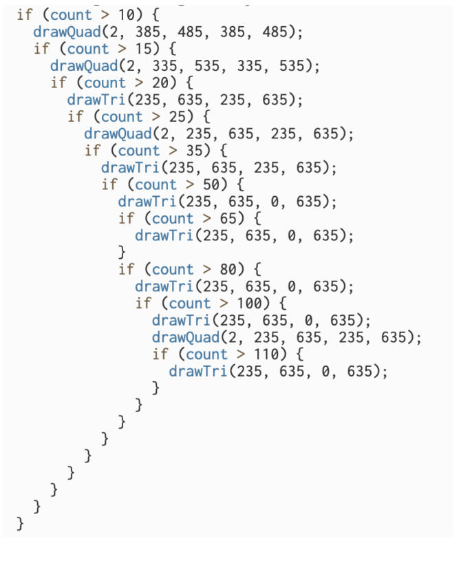

Concept
The idea behind this project is to express how my identity exists in a twofold manner. There is the external and more consistent part of my identity that consists of my appearance, social relations, and cultural background. It is represented by the collection triangles that resemble my face. There is also the internal part of my identity that is characterized by inconsistencies, fluidity, and unpredictability, which consists of my thoughts and beliefs. Only as my external identity dissolve is the complexity of my inner thoughts and beliefs revealed and visually expressed as the fluctuating shapes and lines on the screen. My inner thoughts cannot simply exist in isolation, however, as it must reside in the vessel of a person who exists in the physical world and the web of social relations. Thus, when my external identity is near the point of non-existent, it will be re-summoned by my inner thoughts and reappear.
Process & Difficulties
Drawing My Face
I decided to use Adobe Illustrator to draw my face first and then move the coordinates over to P5.Js so that I have full control over what it looks like at all times. I took a picture of myself and used it as reference. The reason why I used only triangles is because triangles are really easy to draw in P5.Js when you have the coordinates of all the 3 vertices.
After drawing my face in illustrator with triangles, I started transferring the 200+ triangles from Illustrator to P5.Js. I obtained the coordinates of the 3 vertices of each of the triangles by hovering my mouse above each point in Illustrator. For color I used the RGB values of a point that I thought was representative of the entire triangle area by using the color picker.
 While I was storing information about the triangles in P5.Js, I realized that there are way too many triangles to draw and to assign a variable for every single of their 10 properties(x1, y1, x2, y2, x3, y3, R, G, B, Alpha) would be extremely inconvenient. Based on my previous knowledge about computer programming, I figured that creating a triangle class and to store each triangle as an object of the triangle class is probably a better option. I also decided to store the object in an array so that all the triangles will be accessible through a single for loop instead of having to check each of them independently.
Making each triangle disappear when the mouse hovers above it
The next big challenge for me is how to let the computer recognize when the mouse is hovering above a triangle and specifically which triangle the mouse is hovering above, as I wanted this function to help me turn a triangle transparent as the user’s mouse hovers above it. I tried finding an algorithm online but most of them are extremely complicated and difficult to implement into my own code. I then came across a video(https://www.youtube.com/watch?v=vvaczEyI0Ho), which solved the problem very elegantly:
The diagram above demonstrates how any point inside of a triangle will form three smaller triangles when connect with the other vertices that together have an area equal to the larger triangle. We can thus check if the mouse is inside of a triangle by evaluating if sum of area of the three triangle that the mouse point makes with the three other vertices is equivalent to the area of the big triangle. This would only require a for loop that checks if the two aforementioned areas match for each triangle object in the triangle array.
However, one issue that emerged with is method is that it took the program an extreme long time to check if the two areas match. I later discovered that this issue occurred primarily due to the way decimals are stored in java, which might cause two supposedly identical values to be slightly different. This I resolved by replacing the equation with a subtraction that ensures that their difference is less than 0.01.
Flashing Effects
While I was figuring out how to make the triangles responsive to the mouse, I also added flashing effects in the background. As more triangles are removed, the flashes also occur more frequently and intensely. This process was rather problem-free compared to the other steps.
 